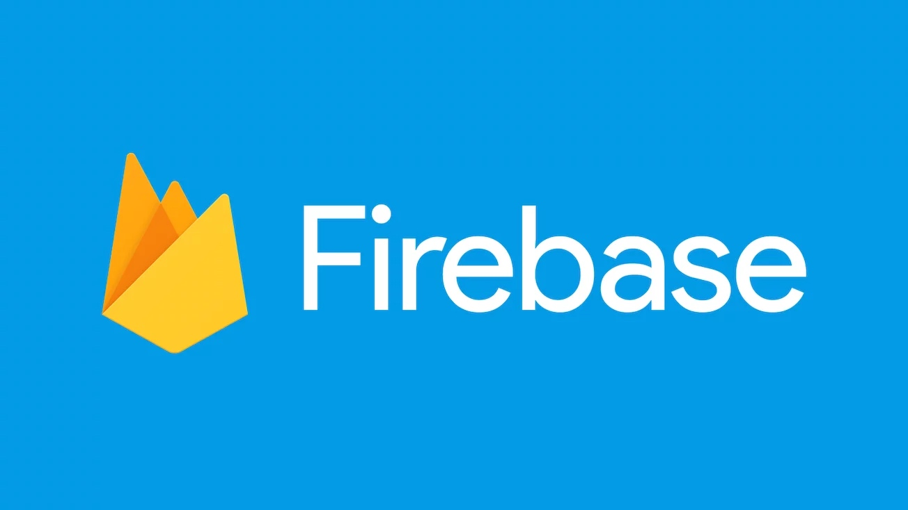

【PWA学习与实践】(4) 解决FireBase login验证失败问题
本文是《PWA学习与实践》系列的第四篇。是我在测试其他demo时遇到的一个问题，算是一篇TroubleShooting。

PWA作为今年最火热的技术概念之一，对提升Web应用的安全、性能和体验有着很大的意义，非常值得我们去了解与学习。
本系列文章《PWA学习与实践》会逐步拆解PWA背后的各项技术，通过实例代码来讲解这些技术的应用方式。也正是因为PWA中技术点众多、知识细碎，因此我在学习过程中，进行了整理，并产出了《PWA学习与实践》系列文章，希望能带大家全面了解PWA中的各项技术。对PWA感兴趣的朋友欢迎关注。
引言
在前一篇文章《让你的WebApp离线可用》中，我们使用Service Worker来做缓存与离线支持。是有一个重要的问题：Service Worker必须要在HTTPS协议下才能运行（或者localhost）。当然，对于一些只有前端资源（不涉及后端服务）的demo，我们完全可以将这些前端（静态资源）托管在一个HTTPS服务下，使得Service Worker可以使用。我选择了google的FireBase来托管demo（其实github page也是个不错的选择）。
使用FireBase非常简单，只需要firebase login -->firebase init-->firebase deploy即可。但是在firebase login的过程中，遇到了一些问题。这篇文章主要总结了我在firebase login遇到的问题及解决方式：
1. 无法获取authorization code
2. Authentication Error: Your credentials are no longer valid.
有需要的朋友可以继续看。
首先，如果你对firebase完全不了解，下面会有一段非常简短的介绍。
什么是FireBase
前段时间学习PWA，在跟着官方教程完成demo后，想要在手机上测试一下效果。然而，遇到的一个问题就是：PWA需要HTTPS协议（或者使用localhost）。
这就需要我们有一个HTTPS的服务，并在其上面部署我们本地写好的demo。而官方demo的最后，推荐使用firebase来托管你的代码。
在FireBase的众多使用场景中，Develop -> Hosting（托管）就是我需要用到的了。然而，在执行firebase login（账号登录）过程中，却遇到了一些问题。
问题一：在浏览器登录账号后，无反应（无法获取authorization code）
最开始，我在CLI中输入firebase login，选择y后，CLI会需要一个authorization code；而浏览器会打开并提示你进行登录。
这里我用google账户进行授权登录。然而，在授权之后，却迟迟没有响应（无法得到authorization code）。这时候，我发现浏览器显示，似乎是在等待localhost进行响应。
解决这个问题的方法就是：在登录时，使用firebase login --no-localhost进行登录。
重新使用firebase login --no-localhost登录。这里我选择了google账号进行登录，重复上面的过程：
这次，你就会在浏览器中获得一串authorization code值：
将它粘贴到CLI中即可。【问题一】解决！
问题二：Error: Authentication Error: Your credentials are no longer valid.
然而，在CLI中输入authorization code之后，在等待了较长时间的验证后，CLI中报出了如下错误：
这是怎么回事呢？通过查阅一些资料发现，这很可能是你在电脑上使用“翻墙”工具所导致的。firebase-tool依赖的npm包（faye-websocket）中，未开启代理的相关设置，因此无法进行验证。
解决这个问题的方法有两种：
方法一：在路由器上设置代理，而非本机
有些文章指出，通过在路由器上设置代理，而非在本机开启代理，可以避免这个问题。不过由于一些原因，暂时还没有尝试这种方式，不过通过一些反馈来看，应该是一个有效的方法。
方法二：(hack) 修改代码与相关环境变量
该方法较第一种方法来看，会稍微“硬”那么一些。具体的操作方式如下：
- 设置环境变量
http_proxy，我本机的代理使用的是1087端口。export http_proxy=http://localhost:1087 - 修改faye-websocket，开启代理配置。faye-websocket是firebase依赖的一个WebSocket库，需要为其client.js添加如下配置：
var Client = function(_url, protocols, options) {
options = options || {};
// 添加proxy配置
options.proxy = {
origin: 'http://localhost:1087',
};
…
}
如果你是全局安装的firebase-tools，你可以通过如下方法找到client.js
NODE_PATH=`npm prefix -g`
// client.js的位置
$NODE_PATH/lib/node_modules/firebase-tools/node_modules/firebase/node_modules/faye-websocket/lib/faye/websocket/client.js
设置环境变量NODE_TLS_REJECT_UNAUTHORIZED。
export NODE_TLS_REJECT_UNAUTHORIZED=0重新登录，
firebase login --no-localhost，重复之前的操作。你会发现，登录成功！
【问题二】解决！
p.s. 针对这个问题，github上也有一个issue：Unable to deploy behind a proxy。
此外，如果你使用了代理，推荐使用全局代理的方式，使你的CLI也使用代理。
写在最后
最后，还是回到我开发PWA时的需求。文章最开始提到了，我是为了在移动端测试PWA demo的效果，所以使用FireBase来托管资源。当然，除了FireBase，还有下面两个办法：
使用github page。由于github全站都是运行在HTTPS下，因此在github page上托管的静态站点可以使用Service Worker；
使用localhost/127.0.0.1。了解PWA的话，你会知道除了HTTPS之外，也可以使用localhost（这一设计是为了方便本机调试）。
本文是《PWA学习与实践》系列中的第四篇。这篇文章并没有探讨PWA中实际的技术，而是记录了我在开发、调试P过程与遇到的问题。可能有朋友也会遇到类似问题，因此记录下来和大家分享。
在下一篇文章中，我们还是会回到PWA背后的技术，来了解一下，如何使用Push API来实现后端服务向客户端进行消息推送。